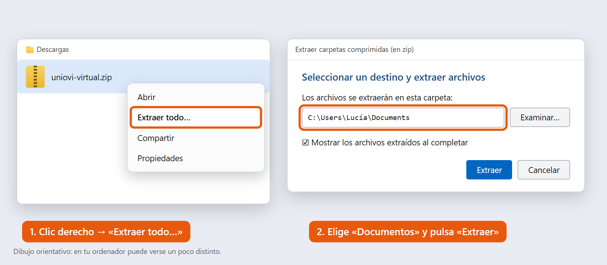
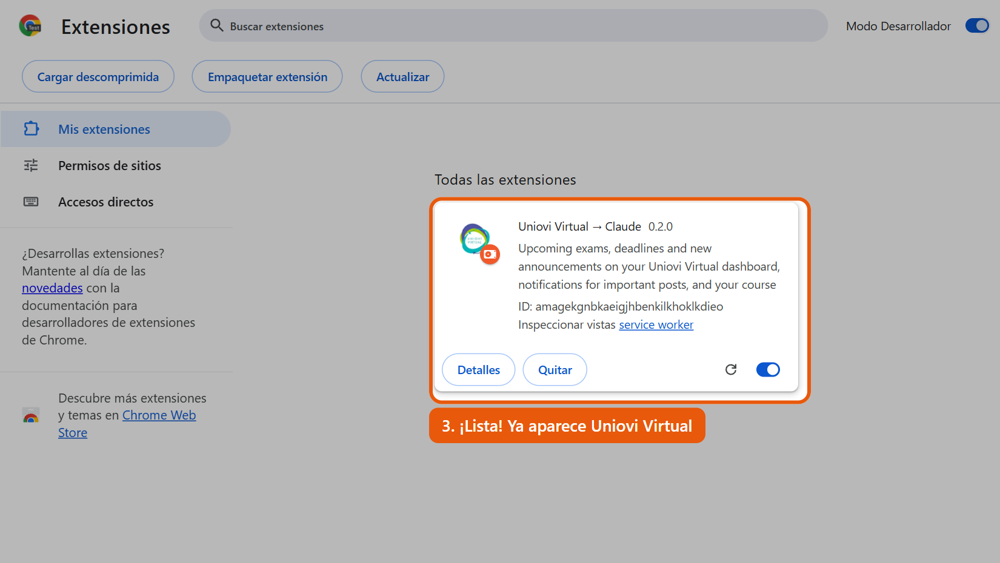

Uniovi Virtual para tu IA
Pregunta a Claude o ChatGPT por tus apuntes, tus exámenes y los avisos del Campus Virtual. Por ejemplo: «¿Qué exámenes tengo esta semana?» o «Explícame el tema 3 de Civil».
DescargarGratis · Para Google Chrome en el ordenador · Menos de 1 MB
Instálala en 3 pasos
Descomprime la carpeta
- Abre la carpeta Descargas y haz clic derecho en
uniovi-virtual.zip. - Elige Extraer todo…
- Pulsa Examinar…, elige Documentos y pulsa Extraer.
Así tendrás la carpeta uniovi-virtual dentro de Documentos. No la borres ni la muevas: Chrome la usa.

En Mac basta con hacer doble clic en el zip y mover la carpeta a Documentos.
Activa el modo desarrollador en Chrome
- Abre Chrome y escribe
chrome://extensionsen la barra de direcciones. Pulsa Intro. - Arriba a la derecha, activa Modo Desarrollador.

- Aparecen unos botones nuevos. Pulsa Cargar descomprimida.

Elige la carpeta
- Se abre una ventana para elegir carpeta. Ve a Documentos.
- Haz un solo clic en la carpeta
uniovi-virtualy pulsa Seleccionar carpeta.
Ya está: aparece Uniovi Virtual en la lista y se abre una página de bienvenida que te guía con el resto (entrar en el campus y conectar tu IA).


¿Qué IA puedo usar?
| IA | ¿Funciona? | Qué necesitas |
|---|---|---|
| Claude (claude.ai) | Sí, gratis | Una cuenta gratuita. El plan gratis permite 1 conector, justo el que necesitas. Es la opción recomendada. |
| ChatGPT | Sí, de pago | Plan Plus o superior. El plan gratuito no permite añadir conectores. |
| Gemini | Probablemente aún no | De momento, esta opción no parece estar disponible en España. |
La página de bienvenida de la extensión tiene un botón para conectar cada IA casi sin escribir nada.
Tu privacidad
- Tus archivos se quedan en tu ordenador, dentro de Chrome. No se suben a ningún sitio.
- Tus preguntas y las respuestas pasan por el servicio de conexión, que no guarda nada.
- El enlace que pegas en tu IA es personal: no lo compartas con nadie.
Cómo actualizar
Cuando haya una versión nueva, la extensión te avisará con «Hay una versión nueva». Entonces:
- Pulsa Descargar en esta página otra vez.
- Extrae el zip en el mismo sitio (Documentos). Si Windows pregunta, elige Reemplazar los archivos en el destino.
- Abre
chrome://extensionsy pulsa la flecha circular ⟳ en la tarjeta de Uniovi Virtual.
Tus apuntes y el enlace de tu IA se mantienen: no tienes que volver a conectar nada.
Preguntas frecuentes
¿Es seguro el modo desarrollador?
Sí. Solo permite cargar una extensión desde una carpeta de tu ordenador en lugar de desde la tienda de Chrome. No cambia nada más. Chrome puede recordarte de vez en cuando que tienes una extensión así: es normal, déjala activada.
¿Por qué no está en la Chrome Web Store?
Es un proyecto pequeño y gratuito hecho por un estudiante. Publicar en la tienda exige una cuenta de desarrollador y pasar una revisión con cada versión. El código es público, así que cualquiera puede revisar lo que hace.
Si cierro Chrome, ¿funciona?
No. Tu IA solo puede leer tus apuntes mientras Chrome está abierto en tu ordenador (no hace falta tener el campus abierto). Si Chrome está cerrado, la IA te dirá que abras Chrome; ábrelo y vuelve a preguntar.
¿Puedo usarla desde el móvil?
La extensión se instala en el ordenador. Una vez conectada, puedes preguntar a tu IA desde el móvil, siempre que Chrome siga abierto en tu ordenador.
¿La extensión ve mi contraseña del campus?
No. Usa la sesión que ya tienes abierta en Chrome, como si navegaras tú. Solo lee: nunca publica ni entrega nada en el campus.
Chrome dice «Falta el archivo de manifiesto»
Has elegido una carpeta de más o de menos. Elige la carpeta uniovi-virtual que tiene dentro un archivo llamado manifest.json. A veces está dentro de otra carpeta con el mismo nombre: entra en la de fuera y elige la de dentro.
¿Y si quito la extensión?
Se borran las copias de tus apuntes que guardaba (están en el campus, así que se vuelven a descargar si la instalas de nuevo). Tendrías que conectar tu IA otra vez con el enlace nuevo.